Project Overview
A two-part simulation study for a company developing a finned aluminium housing for a laser system. The housing carries three fluids/materials at once: a helium annulus that heats the system (24 W per cm length at 35 Torr), a water-cooled aluminium tube (120 cc/min inlet flow at 293 K), and an airflow passing between the outer cooling fins (1 m/s). The brief was to model the preliminary design in Ansys, then optimise it so the system reaches a helium temperature of approximately 523 K while keeping the water below 373 K and the outer aluminium below 323 K.
Assignment 1 built and validated the mesh-convergence methodology (a simpler copper-block conduction/convection case) that was then carried over to Assignment 2, the full laser housing model: parameter correlation, design of experiments, response surface modelling, and a geometry change (two extra cooling fins) to hit the company's thermal targets.
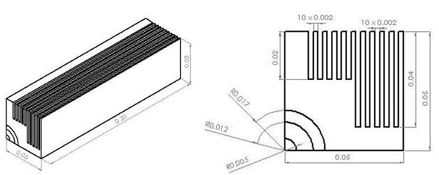
Technical Approach
Key techniques
- Modelled the housing quadrant in SolidWorks as multiple bodies (aluminium outer section, aluminium tube, helium annulus, water channel, air channels), exploiting symmetry to simulate only the top-right quadrant
- Built a mesh-convergence methodology first on a simplified conduction/convection case (copper block in air), then applied the same approach to the full laser housing model: sweep meshing along the extruded length, face/edge sizing on the fluid channels, and skewness/orthogonal-quality checks at every stage
- Ran a Spearman parameter correlation (75 samples) across air velocity, helium heat source, and water flow rate against the three target temperatures, then used an Optimal Space-Filling design of experiments, a Kriging response surface, and a final optimisation stage to find candidate operating points
- Validated every candidate point predicted by the optimisation algorithm with an actual simulation, comparing the two to confirm the response surface was trustworthy before acting on it
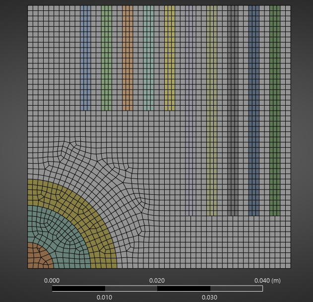
Process steps
- Ran a 5-case mesh convergence study on a copper-block conduction/convection case to establish and validate the mesh-refinement methodology (Assignment 1)
- Modelled the preliminary laser housing design, ran a 5-case mesh convergence study on the full quadrant, and simulated the company's baseline operating parameters
- Performed parameter correlation, design of experiments, and response-surface optimisation on the preliminary design; selected and simulated the best candidate point
- Identified that helium temperature remained ~5% below target even after parameter optimisation, so added two extra cooling fins (within the company's geometric constraints) and repeated the full correlation → DOE → response surface → optimisation pipeline on the updated geometry
Results & Analysis
The preliminary design, run at the company's baseline operating parameters, showed the water reaching boiling point (374.8 K) and the aluminium reaching 356.5 K, both above the acceptable range, while helium sat at 483.2 K, short of the ~523 K target.
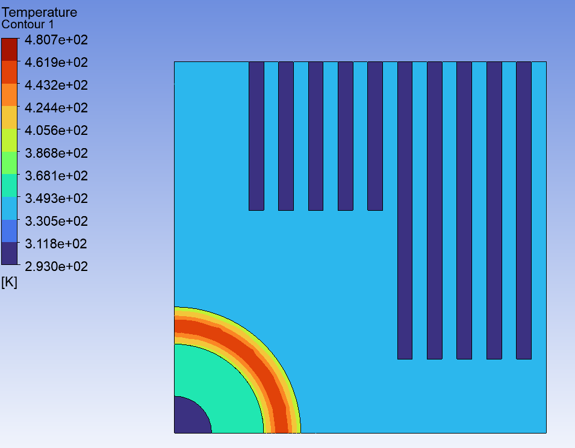
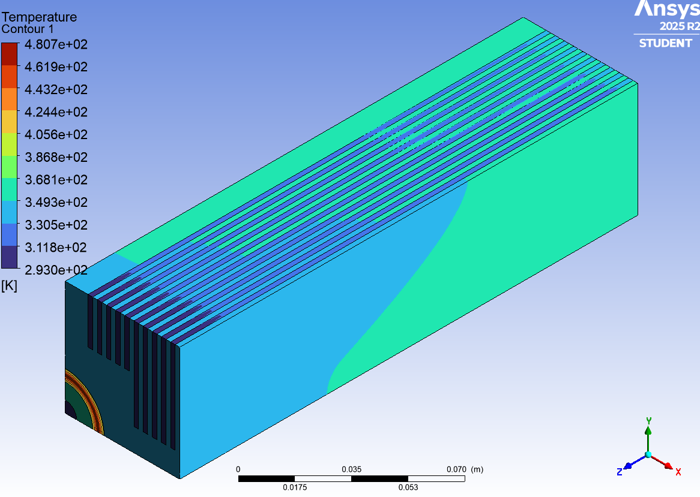
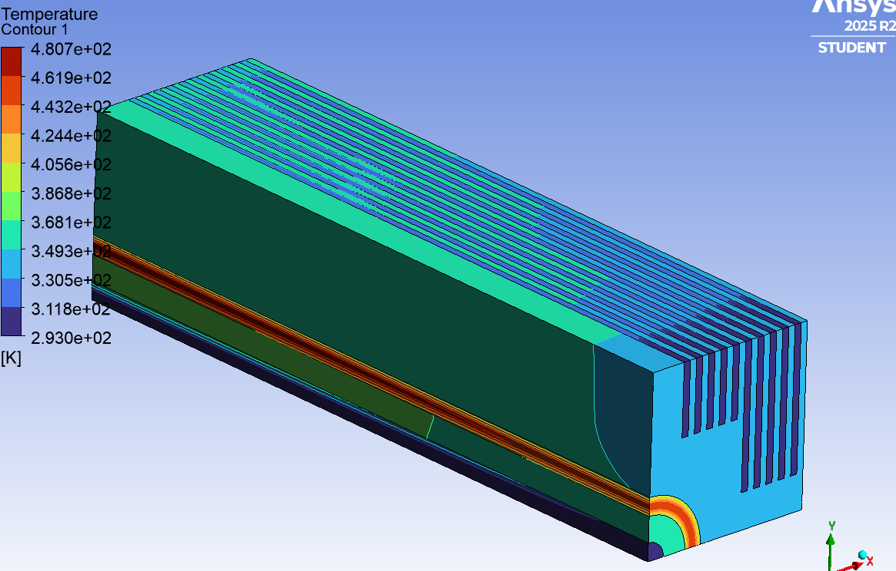
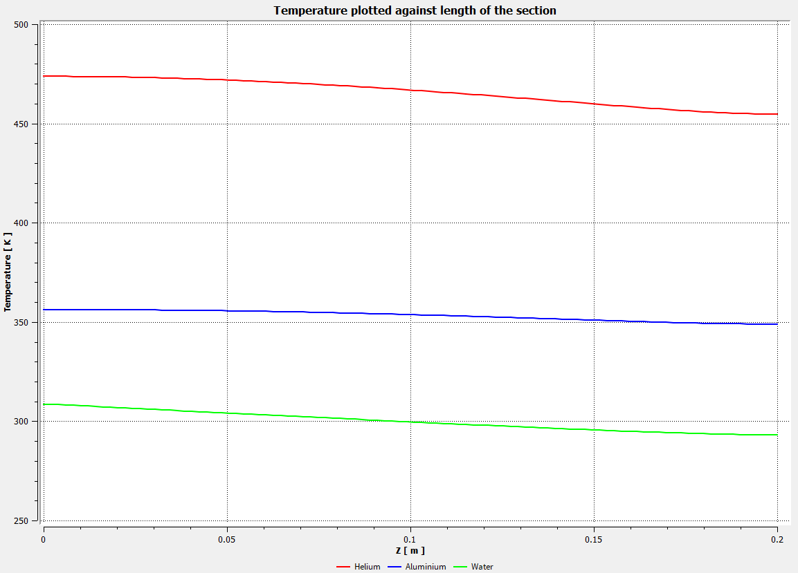
Parameter correlation showed a strong negative relationship between air velocity and aluminium temperature, a strong positive relationship between the helium heat source and all three temperatures, and an isolated relationship between water flow rate and water temperature only. Acting on this, parameter optimisation alone brought the aluminium and water temperatures comfortably under target (317.3 K and 368.0 K), but helium temperature plateaued around 498 K, still short of the 523 K target, with no parameter combination able to close the gap without pushing another temperature out of range.
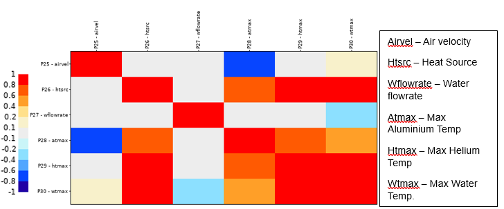
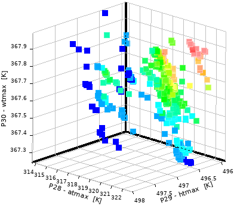
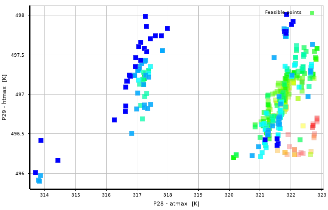
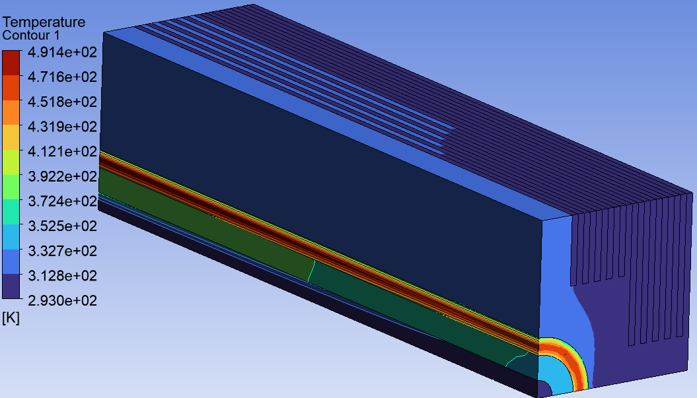
Adding two extra cooling fins (a 20% increase in cooling surface area, within the company's geometric constraints) broke that trade-off: the extra fin area let the system absorb a higher helium heat source without pushing the outer aluminium out of range. The final optimised design, with the candidate point verified by simulation, reached helium 521.8 K, aluminium 320.1 K, and water 372.4 K, satisfying all three of the company's thermal targets simultaneously.
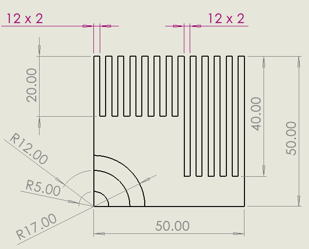
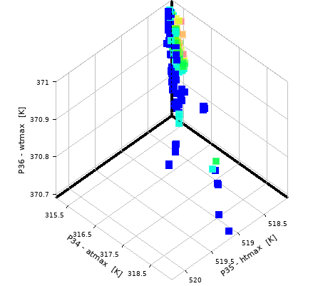
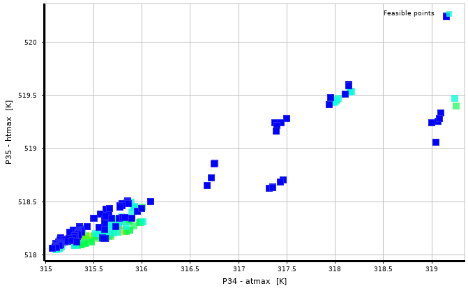
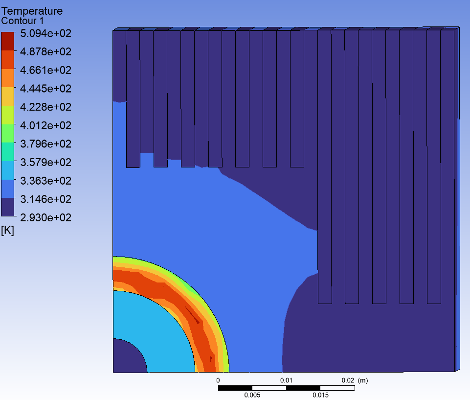
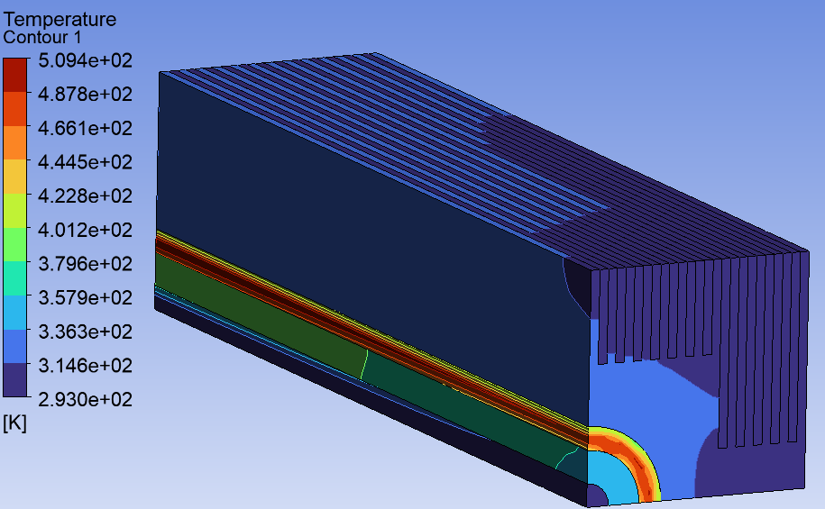
Key learnings
This project reinforced that parameter optimisation has a ceiling: once every input variable had been pushed toward its most favourable value and one target still couldn't be met, the fix had to come from the geometry itself, not from further tuning. Running the full correlation → DOE → response surface pipeline twice (once on the preliminary design, once on the updated geometry) also showed how a single geometry change can shift which input parameters matter: the heat source's influence on aluminium temperature dropped noticeably once the extra fins were added, changing which trade-offs were worth making.